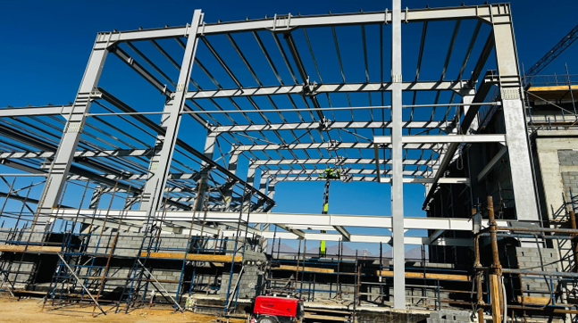
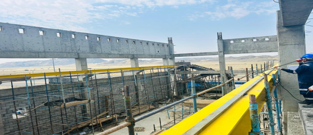
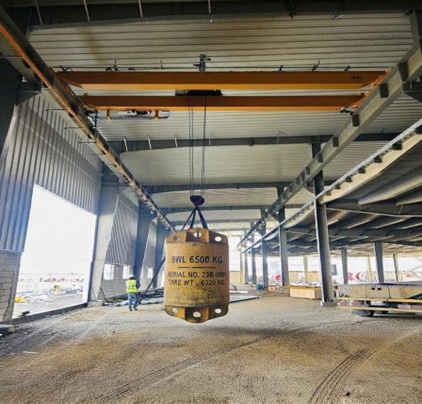

Site assessment & preparation
Review access, installation area, runway and supporting structure, clearances, power supply, lifting needs, and site constraints.
HOME / OUR SERVICES / 03
Mechanical and electrical installation support for electric overhead travelling crane systems.
Discuss crane requirementsEOT CRANE SYSTEMS
SF MASSIVE supports EOT crane installation activities from site assessment and mobilization through mechanical assembly, electrical installation, system checks, testing, and commissioning coordination. Final scope is aligned with the project’s technical documents and manufacturer requirements.
SERVICE PROFILE
Selected visuals related to this service division.




Images are supplied company-profile visuals. Specific project attribution is not verified.
INSTALLATION SCOPE
Work sequence and responsibilities are confirmed with the customer, crane supplier, and project team before mobilization.
Review access, installation area, runway and supporting structure, clearances, power supply, lifting needs, and site constraints.
Rail positioning, alignment and adjustment, welding where specified, finishing, and coordination of required inspection or testing.
Assembly and installation support for bridge girders, end carriages, trolley, hoist, hook block, drives, and mechanical connections.
Crane power and control installation support, including conductor bars or festoon systems, cabling, control panels, pendant or radio controls, and earthing.
Installation and functional verification support for emergency stops, travel limits, hoist limits, overload protection, and related controls.
Coordinate inspection, functional checks, testing, commissioning activities, and handover documentation in accordance with the approved project scope.
CONTROLLED EXECUTION
Safe crane installation depends on site readiness, correct coordination, and clear responsibilities across the installation team.